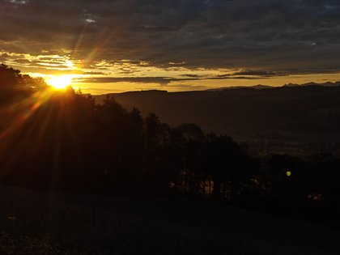

Point de départ
À partir de 15 adultes
Une colo peut être organisée à partir de 15 participants adultes.
Jouer • partager • construire ensemble
Retrouver l’esprit d’une colo et construire le séjour ensemble.
Une expérience collective pour sortir du quotidien, rencontrer d’autres personnes, jouer, partager et vivre un séjour dans lequel chacun peut réellement prendre sa place.

Une expérience collective
La Colo pour adultes s’adresse aux personnes qui souhaitent sortir du quotidien, rencontrer d’autres personnes, jouer, partager et vivre un séjour dans lequel chacun peut réellement prendre sa place.
L’accompagnement peut couvrir toute la durée du séjour : organisation, co-organisation, animation ou responsabilité du cadre, selon les besoins du projet.
La magie de chacun
Chaque participant peut aussi proposer sa « magie » aux autres : un jeu, une activité, une passion, un savoir-faire, une pratique ou simplement une envie.
L’objectif est de créer un cadre de confiance dans lequel chacun peut participer, essayer, proposer ou simplement profiter du séjour à son rythme. Le groupe devient progressivement acteur de sa propre expérience.
Point de départ
Une colo peut être organisée à partir de 15 participants adultes.
Construction
Le contenu, la durée, le lieu et les activités sont construits en fonction des personnes présentes.
Participer ou soutenir